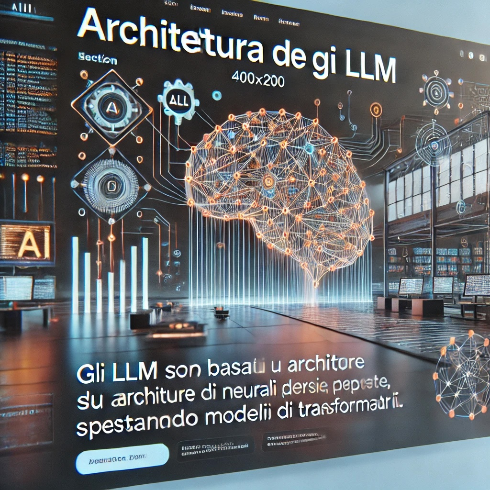

Come sono strutturati gli LLM
Gli LLM sono basati su architetture di reti neurali profonde, spesso utilizzando modelli di trasformatori.
Questi modelli utilizzano meccanismi di attenzione per processare e generare sequenze di testo, permettendo loro di catturare dipendenze a lungo termine nel linguaggio.